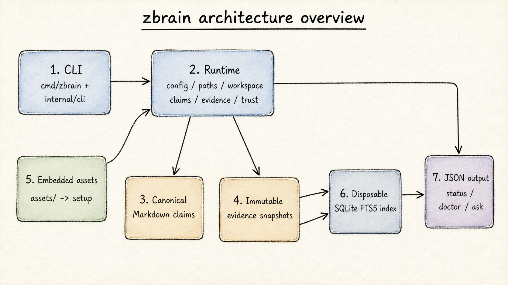
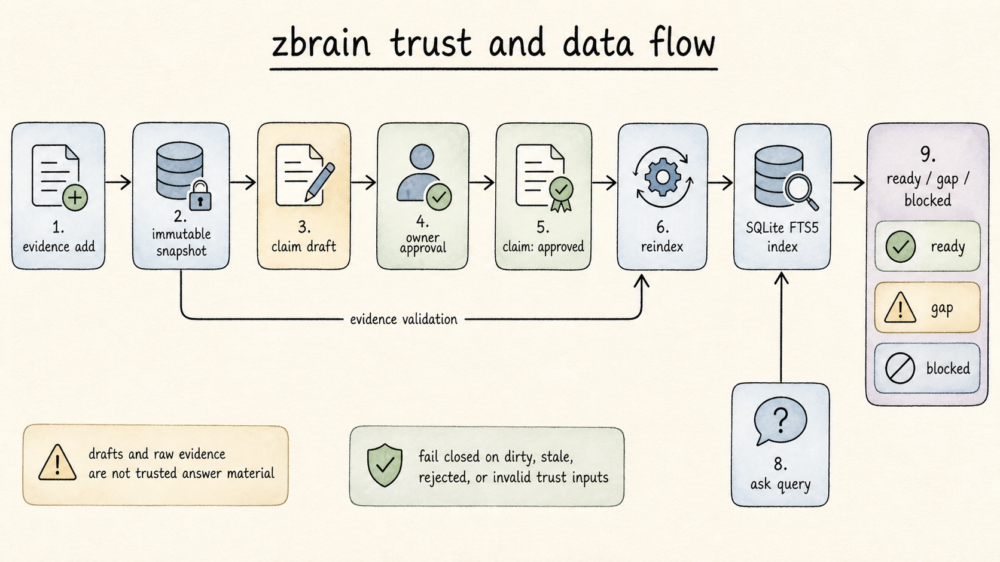

Architecture
The CLI keeps argument parsing and output at the edge. Durable behavior lives in internal/runtime/; Markdown and evidence are canonical, while SQLite is a derived cache that can be discarded and rebuilt.
The shipped runtime keeps canonical OKF-style Markdown claims and immutable local evidence snapshots, builds a disposable SQLite FTS5 index, and returns trusted context JSON. It does not call an LLM or model provider.
Overview


Canonical and derived state
zbrain distinguishes what is canonical from what can be thrown away and rebuilt:
-
Canonical
OKF-style Markdown claims and immutable local evidence snapshots. These are the trust inputs for every surface.
-
Disposable
The per-workspace SQLite FTS5 lexical index.
reindexscans canonical Markdown and evidence, validates trust inputs, and publishes a clean or rejected index without rewriting canonical files. -
Extracted
setupextractsREADME.md,agents/,engine/,skills/, andtemplates/from the embeddedassets/filesystem; it does not activate a workspace seed.
Trust and data flow
evidence addcopies an already-local file into an immutable evidence snapshot and records its metadata.claim draftwrites an OKF claim candidate. The claim body is read from stdin; drafts are never trusted answer material.claim approvevalidates the claim basis and referenced evidence or supporting claims, then recordsverified.at,verified.by, andverified.digest.reindexscans canonical Markdown and evidence, validates trust inputs, and publishes a clean or rejected disposable index without rewriting canonical files.askchecks index freshness and the returned claim's canonical binding and trust dependencies before returning JSON. Conflicts produceblocked; no matching approved claim producesgap.
Shipped gateway and viewer
The shipped binary is standalone and Go-native. It includes the local integration surfaces described in docs/trusted-agent-gateway-spec.md:
-
mcp serve
zbrain mcp serveruns the trusted-agent gateway over stdio. Protocol frames stay on stdout and diagnostics stay on stderr. -
approval
zbrain approval show <challenge-id>andzbrain approval grant <challenge-id>provide the local owner ceremony for lifecycle actions. The agent receives a one-time grant token; the gateway, not an HTTP endpoint, applies the mutation. -
view
zbrain viewserves a read-only embedded viewer on127.0.0.1only.
All three surfaces reuse workspace boundaries and fail-closed trust validation; canonical Markdown and immutable evidence remain the trust inputs.
Repository structure
The repository keeps command handling thin and durable behavior in the runtime package:
cmd/zbrain/ CLI binary entrypoint
internal/cli/ command dispatch and user-facing behavior
internal/runtime/ paths, config, assets, workspaces, claims, evidence,
trust validation, index, and query
assets/ embedded runtime content copied by setup
docs/ current supporting docs, diagrams, and durable plansassets/ is the embedded runtime content source of truth; setup copies it into the runtime root, and docs/ holds durable plans and supporting documentation.
Build and deployment
Build a standalone binary with:
make build
./dist/zbrain --helpThe binary embeds runtime assets; deployment needs no JavaScript runtime, package manager, hosted database, network crawler, or model provider. Run zbrain setup on the target machine to extract its assets into that machine's runtime root. Keep runtime data outside the repository and do not package populated personal workspaces or credentials.
Boundaries
The current slice is intentionally local and minimal. It has no hosted sync, network crawling, background service, GUI editor, remote or HTTP MCP transport, hosted vector database, semantic-search requirement, session transcript store, or model-provider integration:
-
No services
No hosted sync, network crawling, background service, GUI editor, remote or HTTP MCP transport, hosted vector database, semantic-search requirement, session transcript store, or model-provider integration.
-
MCP
MCP is stdio-only.
-
Viewer
The viewer is loopback-only.
-
Embeddings
Optional embeddings are local sidecars rather than a trust or availability requirement.
-
Fail-closed
All surfaces preserve the fail-closed runtime contract.
See Concepts for the trust model, and Getting started for the runtime layout in practice.